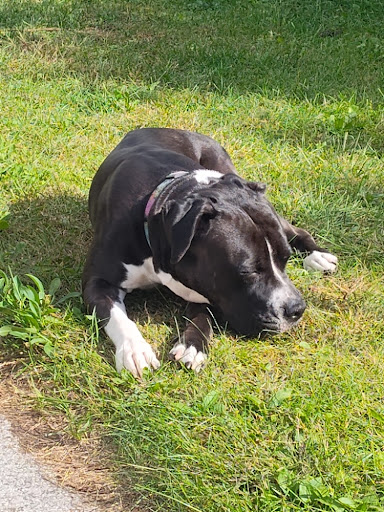

Academic Focus
Software development student at Western Technical College, wanting to specialize in the proper use of AI and its development in an ethical manner.
Tech & Projects
Passionate about system architecture, custom AI models, 3D interaction design, and building custom PC rigs from the ground up.
Interests & Hands-On Hobbies
Texas Hold'em player, mechanical maintenance on cars, trucks, and motorcycles, and Wisconsin sports fan.
Most recently, I adopted a four-year-old Boxer-Pit named Ruby. She is a handful and sometimes a pain in the butt, but she keeps me on my toes and is a good companion that has brought adventure back into my life. It's funny how an animal can change your life in so many ways. They remind you that life is not all about work and stress, but also about enjoying the little things and finding joy in the present moment. She's a good girl even though sometimes she rides my patience pretty thin. ❤️
